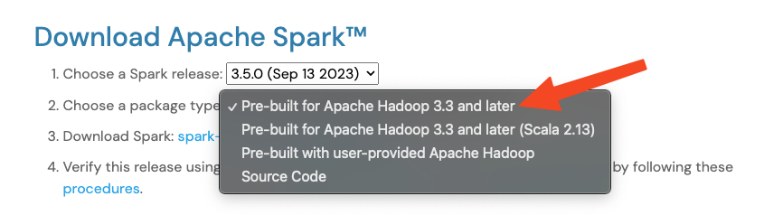

UD05 XX. Spark StandAlone
Vamos a montar un Spark en modo standalone, nos puede servir para
- Entornos testing
- Entornos desarrollo
- Pruebas
-
….
-
En primer lugar, descargamos la versión que lleva hadoop integrado (lleva una versión simplificada de hadoop, las librerías)
https://spark.apache.org/downloads.html


- Verificar archivo descargado
¿Cómo verificar según nuestro SO?
MODO 1: A través de checksum
-
Cómo funciona checksum?
La función CheckSum fue creada a partir de la aplicación de un algoritmo sencillo. Este tiene como objetivo utilizar una serie de operaciones matemáticas y lógicas complejas para convertir una la secuencia de datos en una cadena de números fija conocida como hash de suma de verificación.
Este pequeño hash se utiliza luego para verificar de forma muy rápida si una determinada data ha sufrido daños. Bien sea por almacenamiento (datos escritos o leídos de forma incorrecta) o por transmisión de los mismo (las redes de transmisión siempre tienen una pérdida relacionada a distintos factores). O inclusive si algun actor malicioso la ha modificado de forma premeditada.
Entonces, cómo esta función permite verificar la integridad de una información, es ampliamente utilizada al momento de compartir o almacenar datos en la red. Puesto que los datos, al estar acompañados de los valores hash generados a partir de ellos mismos mediante una función hash, adquieren algunas propiedades extras que les permiten ser verificados y validados a sí mismos cuando son compartidos o almacenados.
Por ejemplo, si un usuario desea compartir un archivo en la red con otro usuario, debe suministrar un valor hash del archivo de manera que este mismo valor pueda ser obtenido al momento de aplicar la función hash sobre ese archivo. Garantizando entonces que el archivo compartido sí llegó de forma correcta y sin alteraciones a su destinatario.
Así mismo, al momento de archivar y almacenar una información, ésta puede ser verificada posteriormente calculando y guardando el resultado del valor hash obtenido. Así, cuando se necesite hacer una comprobación, puede usarse el valor hash guardado para saber si la información ha sido alterada o no, por cualquier motivo.
https://www.apache.org/info/verification.html

Checksum que el archivo debería tener (debemos comparar el resultado que nos da con el resultado que indica la página web)

MODO 2: A través de la firma
-
https://www.apache.org/info/verification.html
Tenemos que descargar la firma y dejarla en la misma carpeta que el archivo de hadoop descargado.

Una vez descargado iniciamos la verificación:
gpg --verify spark-3.5.0-bin-hadoop3.tgz.asc spark-3.5.0-bin-hadoop3.tgz gpg: Firmado el sáb 9 sep 04:08:44 2023 CEST gpg: usando RSA clave FC3AE3A7EAA1BAC98770840E7E1ABCC53AAA2216 gpg: emisor "liyuanjian@apache.org" gpg: Imposible comprobar la firma: No hay clave públicaERROR: No hay clave pública,
Lanzamos de nuevo la verificación
gpg --verify spark-3.5.0-bin-hadoop3.tgz.asc spark-3.5.0-bin-hadoop3.tgz gpg: Firmado el sáb 9 sep 04:08:44 2023 CEST gpg: usando RSA clave FC3AE3A7EAA1BAC98770840E7E1ABCC53AAA2216 gpg: emisor "liyuanjian@apache.org" gpg: Firma correcta de "Yuanjian Li (CODE SIGNING KEY) <liyuanjian@apache.org>" [desconocido] gpg: WARNING: The key's User ID is not certified with a trusted signature! gpg: No hay indicios de que la firma pertenezca al propietario. Huellas dactilares de la clave primaria: FC3A E3A7 EAA1 BAC9 8770 840E 7E1A BCC5 3AAA 2216En este punto la firma es buena, pero no confiamos en esta clave. Una buena firma significa que el archivo no ha sido alterado. Pero ahora necesitamos saber que la clave ha sido creada por el real “yuanjian Li”.
(Cualquier atacante puede crear una clave pública y cargarla en los servidores de claves públicas. Luego pueden crear una versión maliciosa firmada por esta clave falsa. Luego, si intentara verificar la firma de esta versión corrupta, tendría éxito porque la clave no era la clave "real". Por lo tanto, es necesario validar la autenticidad de esta clave.)
Validando la autenticidad de una clave.
- Descomprimir para poder utilizarlo (tenemos que hacerlo de manera que no tenga ninguna relación con hadoop).
Para que no tenga ninguna relación con hadoop hay que tener en cuenta:
- No copiar en /opt/hadoop → Allí tenemos la instalación de hadoop
- No utilizar el usuario hadoop, ya que este usuario tenemos variables de sesión (las añadimos al archivo .bashrc). Y si lo ejecutamos bajo este usuario hará uso de la ruta de hadoop que ya tenemos establecida y no utilizará el modo standalone.
- Por lo que vamos a:
- Crear un nuevo usuario en el sistema.
- Copiar el archivo descargado a la home del usuario dentro de una carpeta llamada spark_standalone
- Descomprimir el archivo descargado
- Crear un enlace llamado spark a la carpeta descomprimida
- Entramos en la carpeta spark y arrancamos nodos maestros y esclavos.
- En la carpeta sbin ejecutamos en
start-master. - Después de arrancar el master, podemos consultar la url localhost:8080
El master escucha peticiones por el puerto 7077, pero abre una página web en el 8080 (cuidado si hay conflictos con el puerto 8080 y ya se está utilizando en alguna aplicación).
Se podría comprobar si está en uso antes de arrancar spark con el comando…
- Arrancamos los esclavos
start-slave. Hay que indicar el nodo y el puerto en el que escucha el maestro.

El esclavo que hemos arrancado es el que recibirá las tareas de los maestros.
De la misma manera se podrían arrancar nodos de otras máquinas.
- Si no arranca, consultar logs en la carpeta
logs - Lanzamos un shell para ejecutar una prueba.
- Ejecutamos como prueba el ejercicio de contar palabras.
### Poner la ruta del fichero correcta.
#opción 1
scala> val fichero=sc.textFile("file:///opt/hadoop/spark/README.md")
#opción 2, no es necesario especificar la ruta ni "file", spark ya sabe que no está trabajando
#con hadoop y no intenta buscar en HDFS, busca en la ruta actual.
scala> val fichero=sc.textFile("README.md")
scala> fichero.count()
scala> fichero.first() # primera línea del fichero
# Contar el total de líneas que contienen el texto spark
scala> val fichero1=fichero.filter(line=>line.contains("Spark"))
scala> fichero1.count()
Cómo crear más esclavos